PRISM
PRior-guided Imagination Sampling in world Models
1Northeastern University2University of California, Berkeley3University of Florida4Qiyuan Lab*Corresponding author
4 tasks × 3 budgets, 10 seeds
from frozen features
parameters
per replan
Planning with physical and action intuition
In JEPA-based world models, predictive representations are typically used to evaluate what an action will do. PRISM measures how much action guidance can be extracted from them. It learns a goal-conditioned action prior from the frozen encoder's current and goal embeddings and integrates the prior into sampling-based model predictive control (MPC) through closed-form Product-of-Gaussians (PoG) fusion. It needs no additional visual encoder, pretrained policy, or language instructions, and accepts different action-head architectures.
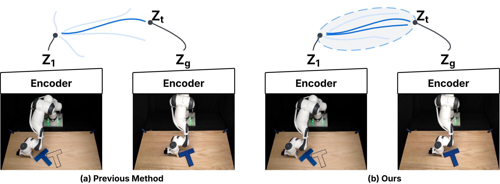
Abstract
Latent world models learn representations that enable them to predict how actions change the environment—a capability we call physical intuition. We find that these same representations also support action intuition: a lightweight head can learn a goal-conditioned action prior directly from the frozen encoder's features. We introduce PRISM to investigate how action intuition can be extracted from frozen world-model representations and used to guide goal-conditioned planning. The prior's mean and predicted uncertainty guide the search for useful actions, while the world model evaluates their consequences against the goal. Experiments on four simulated control tasks and two real-robot platforms show that a lightweight action head improves planning performance, and that the same fusion interface accepts a diffusion prior over the same frozen features without modification. These results demonstrate the potential of reusing world-model representations to both predict action consequences and guide action selection.
Probe the frozen features
An MLP probe predicts the demonstrated action from two frozen embeddings. At a one-step offset it reaches R² = 0.613–0.988 on four tasks. The same probe on a randomly initialized encoder of the same architecture scores R² = 0 in 9 of 12 cells.
Learn a lightweight prior
A two-layer MLP maps current and goal embeddings to a diagonal Gaussian over the next action sequence, trained with β-NLL on cached features: 0.59M parameters on Cube, 0.51M on PushT. A diffusion head over the same features plugs into the same fusion interface.
Fuse by predicted uncertainty
A closed-form Product of Gaussians combines the prior with the planner's default proposal. As \(s\sigma_p\) grows, the fused proposal approaches the default. When training labels are corrupted, \(\sigma_p\) rises (0.53 → 4.49 on PushT) and success approaches prior-free planning.
Method
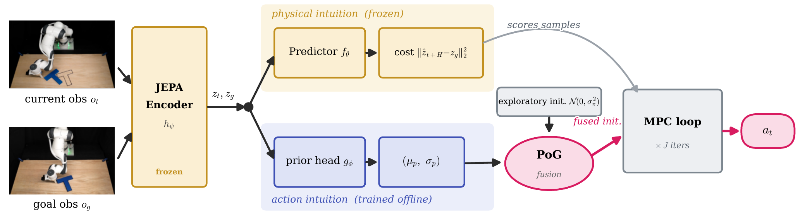
The encoder maps the current and goal observations to \(z_t = h_\psi(o_t)\) and \(z_g = h_\psi(o_g)\). The prior head predicts a diagonal Gaussian \((\mu_p, \sigma_p) = g_\phi([z_t, z_g])\) over \(H\) planning steps of \(B\) actions each (two 512-unit GELU layers, \(\sigma_p = \mathrm{softplus}(r_\phi) + 0.05\), β-NLL loss with β = 0.5). At every replanning step the prior is combined with the planner's default proposal \(\mathcal{N}(\mu_\pi, \mathrm{diag}(\sigma_\pi^2))\), \(\mu_\pi = 0\), by multiplying the two diagonal Gaussians per coordinate:
The update depends only on \(s\sigma_p/\sigma_\pi\). All results use \(\sigma_\pi = 1.0\) in normalized action space, \(s = 1\) for the MLP head, and a floor of 0.05 on \(\sigma_{\text{fused}}\). MPPI then draws \(K\) candidates from \(\mathcal{N}(\mu, \mathrm{diag}(\sigma^2_{\text{fused}}))\), scores each by \(\lVert f_\theta(z_t, \mathbf{a}) - z_g \rVert_2^2\), and moves the mean to the softmax-weighted average of the \(K_{\text{elite}}\) lowest-cost candidates for \(J\) iterations, holding \(\sigma_{\text{fused}}\) fixed. The controller executes the first action and replans from the next observation.
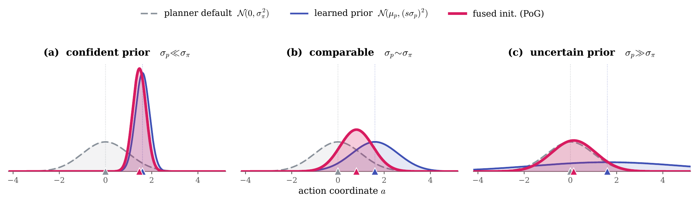
Interactive: Product-of-Gaussians fusion
Drag the prior mean in the action plane, or use the sliders. The planner default is \(\mathcal{N}(0, 1)\) per coordinate, as in the experiments (\(\sigma_\pi = 1.0\), \(s = 1\)). The fused mean is \(w\,\mu_p\) with prior weight \(w = \tau_p / (\tau_\pi + \tau_p)\). The 64 samples use the same standard-normal draws before and after fusion.
Action prediction from frozen features
A separate two-layer MLP probe (width 512, GELU) predicts \(a_t\) from \([z_t, z_{t+\Delta}]\) for each task and offset \(\Delta \in \{1, 5, 25\}\), trained with MSE on StandardScaler-normalized actions. \(\Delta = 1\) is an inverse-dynamics readout; \(\Delta = 25\) matches the planning-goal offset. \(R^2 = 0\) is the score of always predicting the dataset-mean action.
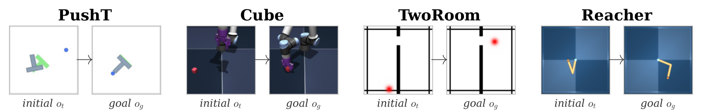
cube-single): 10,000 scripted-oracle episodes (100%). TwoRoom: 10,000 episodes from a noisy two-stage heuristic (40.4%). Reacher: 10,000 episodes, none reaching the success criterion. On each task the world model and the action head use the same dataset and the same frozen LeWM encoder.| Task | Δ = 1 | Δ = 5 | Δ = 25 |
|---|---|---|---|
| Trained LeWM encoder (frozen) | |||
| PushT | .798 ± .009 | .751 ± .003 | .367 ± .010 |
| Cube | .739 ± .001 | .699 ± .001 | .628 ± .001 |
| TwoRoom | .988 ± .000 | .219 ± .003 | .087 ± .002 |
| Reacher | .613 ± .001 | .215 ± .001 | .031 ± .001 |
| Same architecture, re-initialized from scratch (frozen) | |||
| PushT | .000 ± .000 | −.000 ± .000 | .000 ± .001 |
| Cube | .090 ± .002 | .168 ± .002 | .094 ± .001 |
| TwoRoom | .000 ± .000 | .000 ± .000 | .002 ± .000 |
| Reacher | .000 ± .000 | .000 ± .000 | .000 ± .000 |
Table I. Probe \(R^2\), mean ± std over three probe seeds {0, 1, 42}; 90/10 episode split, 40,000 held-out windows per fit. Predictability decreases with \(\Delta\): Cube and PushT keep 0.628 and 0.367 at \(\Delta = 25\); TwoRoom and Reacher fall to 0.087 and 0.031. With the re-initialized encoder 9 of 12 cells are 0, and Cube's residual shows no decay in \(\Delta\).
Planning with the extracted prior
Three planners on four tasks at \(K \in \{32, 64, 128\}\) candidates per iteration. Vanilla MPPI starts from zero mean and the default width \(\sigma_\pi\). Warm-start MPPI starts from \(\mu_p\) but keeps \(\sigma_\pi\), discarding \(\sigma_p\). PRISM-MPPI starts from the PoG-fused \((\mu_p, \sigma_p)\).
PushT
success rate, %Cube
success rate, %TwoRoom
success rate, %Reacher
success rate, %Success rate (%), mean ± std over ten evaluation seeds {0, …, 9}, 50 episodes per seed. All planners use a goal offset of 25 environment steps, \(H = 5\), \(B = 5\), \(J = 30\), \(\lambda = 0.5\) and \(K_{\text{elite}} = 30\).
- PRISM-MPPI has higher mean success than vanilla MPPI in all 12 task–budget settings, by 11.8–35.4 pp, and higher than warm-start MPPI in all 12.
- PRISM-MPPI at \(K = 32\) exceeds vanilla MPPI at \(K = 128\) on every task: +21.8 pp on PushT, +34.6 on Cube, +8.4 on TwoRoom and +16.2 on Reacher, winning 10/10 paired seeds in each case (\(p \le 1.1\times10^{-3}\)).
- Rerunning both baselines with \(K_{\text{elite}} = K\) moves every cell by at most 1.4 pp (24 cells, ten paired seeds; pooled +0.09 pp, \(p = 0.63\)).
Analyses
Prior design, training-data corruption, encoder and planner choice, on PushT and Cube.
Table IIExecuting the prior without the planner
| Task | Mean only | PRISM-MPPI, K = 32 |
|---|---|---|
| PushT | 28.2 ± 5.9 | 80.6 ± 5.6 |
| Cube | 68.0 ± 5.6 | 82.8 ± 5.5 |
| TwoRoom | 75.6 ± 4.4 | 81.8 ± 5.8 |
| Reacher | 7.0 ± 4.3 | 60.0 ± 6.9 |
SR (%), ten seeds. Executing \(\mu_p\) directly, with no candidates sampled, reaches 7.0–75.6% and is below PRISM-MPPI on all four tasks.
Table IVPoG against a PiJEPA-style initialization
| Prior | Rule | PushT | Cube |
|---|---|---|---|
| Clean | PiJEPA-style | 77.0 ± 4.5 | 81.2 ± 6.4 |
| Clean | PoG | 80.6 ± 5.6 | 82.8 ± 5.5 |
| Weak | PiJEPA-style | 45.0 ± 7.2 | 51.8 ± 3.9 |
| Weak | PoG | 62.0 ± 5.4 | 51.8 ± 6.0 |
SR (%) at K = 32, ten seeds, same MLP head. PiJEPA-style replaces the default proposal with the prior's clamped mean and std (\(\sigma_{\max} = \sigma_\pi\)); PoG multiplies the two. Weak retrains the head on 50% corrupted demonstrations. The one substantial gap is the weak prior on PushT: +17.0 pp, 10/10 seed wins. Cube's weak cell is a tie. With a diffusion prior in place of the head, the PoG margin is +0.4 to +5.0 pp, within seed noise.
Table IIICost and performance of action priors
| Prior | Params (M) | Train (min) | Infer (ms) | PushT | Cube |
|---|---|---|---|---|---|
| None | 0 | – | – | 56.0 ± 5.7 | 47.4 ± 6.3 |
| MLP head | 0.51–0.59 | 0.4–3.1 | 0.048 | 80.6 ± 5.6 | 82.8 ± 5.5 |
| Diffusion head | 18.5 | 23 | 90–92 | 93.6 ± 3.6 | 99.8 ± 0.6 |
SR (%) at K = 32, ten seeds, 50 episodes each; same world model, planner and PoG rule. The diffusion head is a conditional UNet1D on the same frozen embeddings; its prior mean and std come from 16 DDIM samples of 10 denoising steps each. It uses goals 25 steps ahead while the MLP uses terminal frames, so this comparison does not isolate head architecture. The diffusion head reaches higher success; the MLP uses 31–36× fewer parameters and less training and inference time. Times are on one RTX 5090 and exclude world-model pretraining and feature caching; inference is prior generation per replan. End-to-end planning latency on Cube at K = 128 is 210.1 ± 1.2 ms for vanilla MPPI, 210.7 ± 2.2 ms for mean-only initialization and 211.6 ± 4.8 ms for PRISM.
Table VIIIncreased uncertainty reduces reliance on corrupted priors
| PushT | Cube | ||||||
|---|---|---|---|---|---|---|---|
| ε | σp | val MSE | SR | σp | val MSE | SR | |
| 0% | 0.53 | 0.73 | 85.4 | 0.60 | 0.61 | 83.0 | |
| 25% | 1.96 | 0.79 | 72.0 | 0.96 | 0.68 | 52.7 | |
| 50% | 3.08 | 1.07 | 66.7 | 1.18 | 0.77 | 52.7 | |
| 75% | 3.90 | 1.56 | 66.0 | 1.33 | 0.90 | 50.7 | |
| 100% | 4.49 | 2.16 | 60.7 | 1.51 | 1.04 | 46.7 | |
| no prior | — | — | 58.8 | — | — | 48.2 | |
For a fraction ε of training episodes the action labels are replaced with uniform random samples within the action bounds and the head is retrained; the world model and planner are fixed. σp is the head's mean predicted standard deviation on held-out data. SR at K = 128 over three seeds, except the ε = 0 and no-prior rows (ten seeds). As σp rises, PoG lowers the prior's weight in the fused proposal. With all labels corrupted, success is 60.7% on PushT and 46.7% on Cube, close to the prior-free 58.8% and 48.2%; the seed sets differ, so the agreement is approximate.
Table VEncoder ablation
| PushT | Cube | |||||||
|---|---|---|---|---|---|---|---|---|
| Method | Prior params | K = 32 | K = 64 | K = 128 | K = 32 | K = 64 | K = 128 | |
| Vanilla MPPI (DINOv2-based) | 0 | 4 ± 2 | 3 ± 2 | 5 ± 1 | 45 ± 4 | 49 ± 6 | 41 ± 3 | |
| PRISM-MPPI (DINOv2-based) | 0.51–0.59M | 13 ± 6 | 10 ± 7 | 15 ± 5 | 57 ± 7 | 65 ± 5 | 67 ± 3 | |
| Vanilla MPPI (LeWM) | 0 | 59 ± 5 | 61 ± 7 | 57 ± 6 | 46 ± 2 | 44 ± 5 | 44 ± 4 | |
| PRISM-MPPI (LeWM) | 0.51–0.59M | 82 ± 4 | 86 ± 6 | 89 ± 4 | 79 ± 2 | 78 ± 3 | 79 ± 6 | |
SR (%), three seeds {0, 1, 42}. The DINOv2-based world model is our own implementation, inspired by DINO-WM: frozen DINOv2-base in place of LeWM's ViT-tiny, with a learnable 768 → 192 projector, the LeWM predictor and the same training recipe. PRISM keeps a +6 to +18 pp lift over vanilla MPPI in 5 of 6 cells (one-sided paired t). The comparison is within-encoder: absolute levels differ between the two encoders.
Table VIThe same prior under CEM
| Task | K | No prior | Mean only | PoG |
|---|---|---|---|---|
| PushT | 32 | 12.7 ± 8.1 | 41.3 ± 3.1 | 25.3 ± 3.1 |
| PushT | 64 | 80.7 ± 8.1 | 88.7 ± 6.1 | 84.0 ± 7.2 |
| PushT | 128 | 90.7 ± 6.1 | 92.7 ± 5.8 | 92.7 ± 2.3 |
| Cube | 32 | 53.3 ± 6.4 | 60.7 ± 1.2 | 68.7 ± 7.0 |
| Cube | 64 | 59.3 ± 8.3 | 74.7 ± 2.3 | 79.3 ± 6.4 |
| Cube | 128 | 61.3 ± 4.6 | 76.0 ± 4.0 | 82.7 ± 5.0 |
SR (%), three seeds {0, 1, 42}. CEM refits mean and covariance each iteration. PoG initialization beats prior-free CEM at every budget on both tasks, and beats mean-only initialization on Cube at every budget. On PushT mean-only is higher at K = 32 and 64 and equal at K = 128; sweeping the initial std floor over {0.05, 0.10, 0.20, 1.0} gives 24.0–25.3% at K = 32.
Figure 6Sensitivity to the prior scale
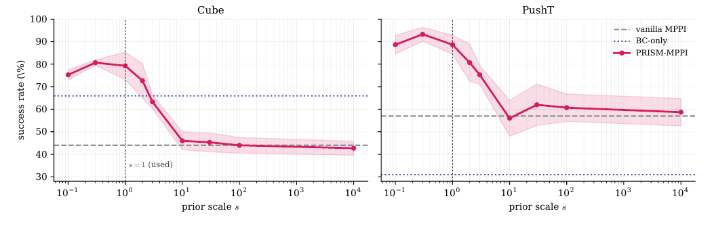
SR against \(s\) (log axis) at K = 128, mean ± std over three seeds. Dashed: vanilla MPPI; dotted: mean-only execution. Success peaks around \(s = 0.3\) to 1. At \(s = 10^4\) it is 43% vs 44% prior-free on Cube and 59% vs 57% on PushT; in that limit the two planners are the same algorithm.
Qualitative comparisons
Same episode, start state and sample budget. Each clip shows Vanilla MPPI (left), PRISM-MPPI (middle) and the goal (right). The clips are episodes in which vanilla MPPI fails and PRISM-MPPI succeeds.
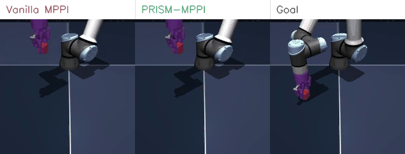
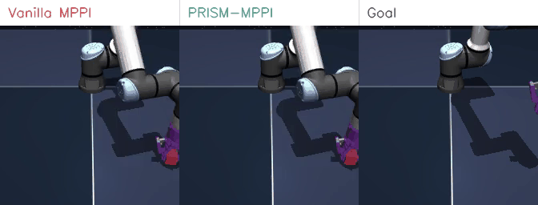
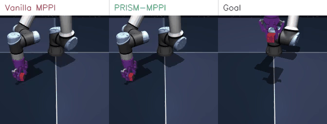
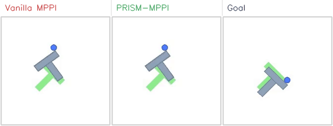
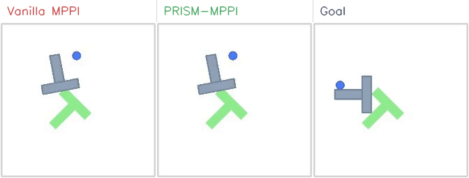
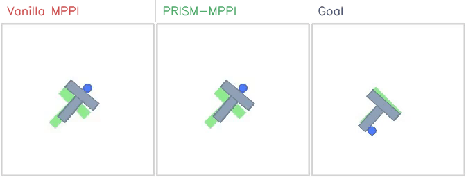
Real-robot evaluation
T-block pushing with a Franka Research 3 (FR3) and cube manipulation with an ARX X5. Each platform uses one third-person RGB camera and a world model trained on task-specific teleoperation data. Planning with and without the learned prior was compared over 40 trials per condition, interleaved in randomized order, with \(s = 1\).
The direction matches simulation. More trials are needed to establish the size and reliability of the gains.
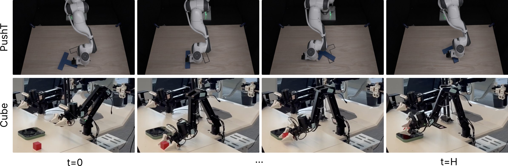
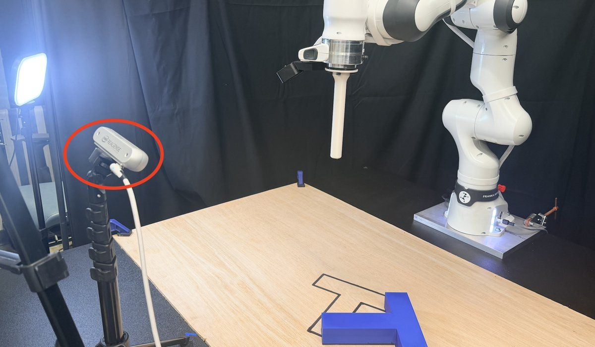
Franka FR3 + PushT. RealSense D455, Meta Quest 3 teleoperation, RTX 5080 for planning. 411 episodes (93,728 frames at 10 Hz): 200 target-completion episodes and 211 ending at arbitrary positions. The world model uses all 411, the action head the 200 target-completion episodes. Cartesian-impedance control of planar end-effector displacements; K = 300, J = 30, H = 3, B = 5 (1.5 s lookahead), replanning every 0.5 s.
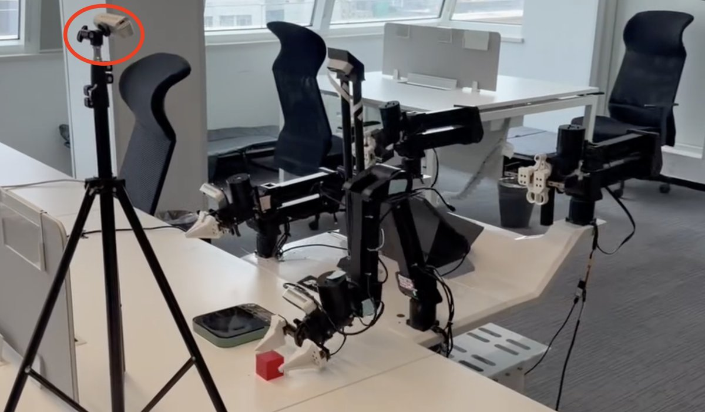
ARX X5 + cube. Agilex Mobile ALOHA platform, RealSense D435i, joystick teleoperation, RTX 4090; 201 episodes. The red circle marks the tripod-mounted RealSense, the planner's only RGB sensor; neither platform uses a wrist or egocentric camera.
Limitations
- Action predictability weakens for distant goals, and inaccurate, overconfident priors can impair planning.
- The utility of uncertainty-guided sampling depends on the task and the quality of the learned prior.
- PoG may discard multimodal structure in the prior.
- Real-robot results use 40 trials per condition and require broader validation.
BibTeX
@misc{wang2026prism,
title = {PRISM: PRior-guided Imagination Sampling in world Models},
author = {Yuhai Wang and Jiawei Xia and Bowen Sun and Rongxuan Zhou and Xiao Hu and Yongliang Shi and Jing Du and Yang Ye},
year = {2026},
eprint = {2606.07974},
archivePrefix = {arXiv},
primaryClass = {cs.RO},
url = {https://arxiv.org/abs/2606.07974},
}